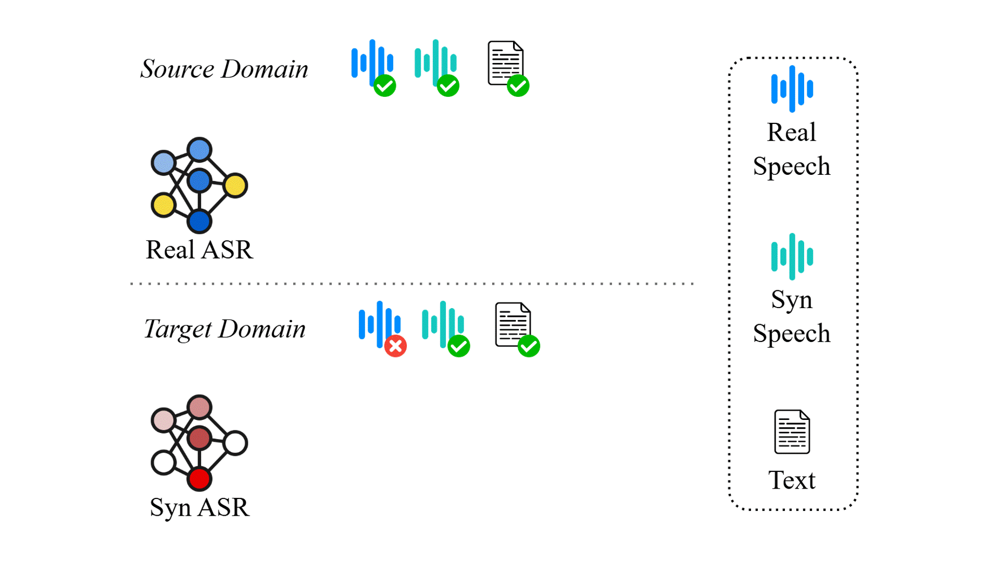

Synthetic data is widely used in speech recognition due to the availability of text-to-speech models, which facilitate adapting models to previously unseen text domains. However, existing methods suffer in performance when they fine-tune an automatic speech recognition (ASR) model on synthetic data as they suffer from the distributional shift commonly referred to as the synthetic-to-real gap.
In this paper, we find that task vector arithmetic is effective at mitigating this gap. Our proposed method, SYN2REAL task vector, shows an average improvement of 10.03% in word error rate over baselines on the SLURP dataset.
Additionally, we show that an average of SYN2REAL task vectors, when we have real speeches from multiple different domains, can further adapt the original ASR model to perform better on the target text domain.
Overview of the SYN2REAL Task Vector. The pre-trained model is fine-tuned on source domain synthetic and real speech data, separately. The difference between their parameters forms the SYN2REAL task vector. The SYN2REAL task vector is then added to a model fine-tuned on target synthetic data to overcome the synthetic-to-real gap.
In the context of automatic speech recognition (ASR) domain adaptation, domain mismatch can be broadly classified into three categories:
In this work, we aim to adapt ASR models from source textual domains with real speech and text data to a new textual domain with only text data. We leverage data synthesized from off-the-shelf text-to-speech (TTS) systems to address this textual topic mismatch. Figure 2 illustrates the domain shifts we focused on in ASR adaptation, depicting the challenges of bridging both the textual gap (source vs. target domain) and the acoustic gap (synthetic vs. real speech). While previous works have shown that adapting ASR models using synthetic data effectively addresses textual topic mismatch, ASR models trained on synthetic data often underperform compared to those trained on real data due to mismatches between synthetic and real speech. To overcome this limitation, we propose the SYN2REAL task vector, a novel approach designed to bridge the acoustic gap between synthetic and real speech data, enhancing the performance of ASR models in domain adaptation.
The framework in Figure 3 illustrates the process of creating the SYN2REAL task vector by subtracting the parameter differences between a model fine-tuned on synthetic speech (Source Synthetic) and a model fine-tuned on real speech (Source Real) from pretrained ASR (PASR). This task vector is then applied to the target synthetic domain (Target Synthetic) to improve ASR performance by bridging the gap between synthetic and real speech data.
@misc{su2024taskarithmeticmitigatesynthetictoreal,
title={Task Arithmetic can Mitigate Synthetic-to-Real Gap in Automatic Speech Recognition},
author={Hsuan Su and Hua Farn and Fan-Yun Sun and Shang-Tse Chen and Hung-yi Lee},
year={2024},
eprint={2406.02925},
archivePrefix={arXiv},
primaryClass={eess.AS},
url={https://arxiv.org/abs/2406.02925},
}